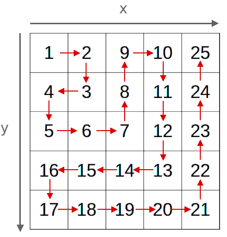

In what concerns the continuous evaluation solving exercises grade during the semester, you should submit until 23:59 of
(this exercise will still be available for submission after that deadline, but without counting towards your grade)
[to understand the context of this problem, you should read the class #05 exercise sheet]
In this problem you should submit a function as described. Inside the function do not print anything that was not asked!
The name of the .py source file you submit to Mooshak should NOT start with a digit (you will get an error if you submit it like that).
One dark and stormy evening at the Springfield Nuclear Power Plant, Mr. Burns, the town’s wealthiest (and most eccentric) resident, sits in his luxurious office, poring over an ancient map, encoded in the form of an infinite spiral matrix, with numbers arranged in rows and columns. Here are the first five layers of the spiral, starting on cell (1,1):

Legend has it that certain positions on this grid could lead to unimaginable wealth - or so Mr. Burns believes. The problem is that the map's instructions require a very specific number from seemingly random (y, x) coordinates on the grid. And Mr. Burns, not one for patience, wants instant access to these values without having to search row by row.
Write a function spiral_number(y, x) that receives a pair of coordinates (y, x) and returns the number at that position in the infinite spiral matrix shown above.
The following limits are guaranteed in all the test cases that will be given to your program:
| 1 ≤ y, x ≤ 109 | Coordinates of the number |
NOTE: the limits are really high and you must have an efficient solution that can compute this very quickly.
A solution that simply tries to simulate the spiral number by number will most likely have Time Limit Exceeded.
Your program will need to be able to answer around five hundred queries in less than one second.
| Example Function Calls | Example Output |
|---|---|
print(spiral_number(2,3)) print(spiral_number(1,1)) print(spiral_number(4,2)) print(spiral_number(170550340,943050741)) |
8 1 15 889344699930098742 |
Content by Pedro Ribeiro and Bernardo Portela (DCC/FCUP), migrated from dcc.fc.up.pt/~pribeiro/aulas/ip2526/problems/ip058.html.